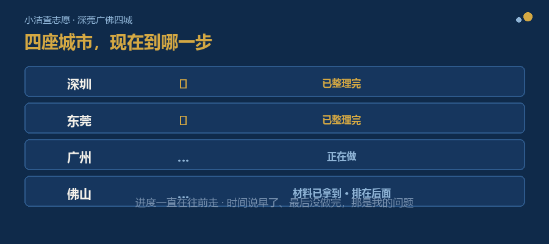

这个系列，写到今天是第八篇。
这段时间，家长朋友问得最多的一句话是：
今天这一篇，就把这件事说清楚。
也会说清楚：现在还没做到哪一步。
八篇不算少，说的事情却不多。回头看，就是四件：
第一，家长的困扰长什么样。查了两周资料，越看越乱；真正卡住他们的，是信息太多、太散——一半是专业术语绕来绕去，一半是数据和说法太散。（第 1、2 篇）
第二，我为什么决定做，以及打算怎么做。一个念头在心里放了很多年；动手之前，先想清楚它到底给谁用。（第 3、4 篇）
第三，四座城市为什么不能互相套用。四个不一样的总分、四张不一样的批次表、四种不一样的志愿填法。同一句“600 分”，在深圳和东莞的含义并不一样。（第 5 篇）
第四，一个数据要经得起问。哪一年、哪条线、谁说的；以及规则背后，还藏着一些容易被忽略、但会影响填报的条件。（第 6 篇）
再加一篇给初二家长：现在做好三件事，到填志愿那个月，你已经有了充分准备。（第 7 篇）
说到底，我们只做一件事：做好中考前期的资料整理和梳理，帮家长在最短时间里找到可靠的志愿填报方案。
如果你是从中间某一篇开始看的，可以按这张表找：
| 你眼下的情况 | 可以先看 |
|---|---|
| 越查越乱，不知道该信谁 | 第 1 篇 |
| 说不上来自己卡在哪 | 第 2 篇 |
| 想知道我为什么做这件事 | 第 3 篇 |
| 想看我具体怎么动手 | 第 4 篇 |
| 想弄明白几座城市差在哪 | 第 5 篇 |
| 看到一个分数线，不确定它是什么意思 | 第 6 篇 |
| 家里孩子才初二 | 第 7 篇 |
深圳、东莞已经整理完；广州正在做；佛山的材料也已经拿到手，排在后面。

四城进度：深圳 ✓ 东莞 ✓ 广州进行中 佛山后排
进度一直在往前走。但我不打算在这里给一个具体日子——如果时间说早了、最后没做完，那是我的问题。
从第四篇说要找研发团队，到执照、手续一件件办下来，再到深圳、东莞的程序开始设计——进度一直在走。
但它现在还没到能交到你们手里的时候。所以这一篇里，我不说“你去用吧”——还差一步，这一步我要说清楚。
四座城市的数据都收齐了，不等于你就能直接用。中间隔着三件事，一件都省不掉。
第一件，是“翻译”。
文件里的写法，和你要做的判断，不是一回事。
文件写的是“第一批录取控制分数线”；你要问的是“我这个分，第一志愿该填哪一所”。
把文件上的话，变成你能用来判断的话，不是把文件搬过来就行，得重新整理一遍。
第二件，是“核”。
数据错一处，家长就可能白跑一趟，甚至填错一个志愿。
所以每一个数字，都要能说清楚：是哪一年的、属于哪条线、从哪里来的。这件事没有捷径，只能一条一条核对。（第 6 篇说过这条规矩。）
第三件，是“有人接着管”。
政策每年都在动：深圳的中考总分，2026 年起从 610 分改成了 630 分；东莞已经明确，2027 年起从 800 分降到 680 分。
今年的数据，明年未必还能用。
所以这不是一件“做完就完了”的事，得有人每年跟着更新。
这三件事，都不是“再多收一批数据”能解决的。
这一年剩下的时间不多。不慌，但有两件事，现在就能做。
第一件，把“我家孩子属于哪一类”定下来。
比如在深圳，A 类、C 类、D 类能报的范围不一样；名额分配和第一批，走的也是两条线。这一件事定下来，后面你看到的每条信息才有判断依据。
第二件，看分数线的时候，把“哪一年、哪条线”一起标上。
住宿还是走读、A 类还是 D 类、哪一年——没标清楚的数据，先别急着拿来比较。
剩下的，等填报那几个月，一条一条核对就行。
今年第四季度，我们会完成小程序设计，开一轮内测，请一批家长先进来试用。
想第一批用上的，在留言里留下你的【城市 + 年级】（例如：深圳 + 初三）。我会按留言来排先后——你在哪个城市、几年级，请一定写清楚。
第二季，我会一座城市一座城市写专题。深圳前面已经讲得比较多，东莞、广州、佛山会分别单独讲透。
八篇到这里，先告一段落。
这四座城市里，每一年都有好几万个家庭要填这张表。这件事值得有人认认真真做一遍。
我会接着做下去。